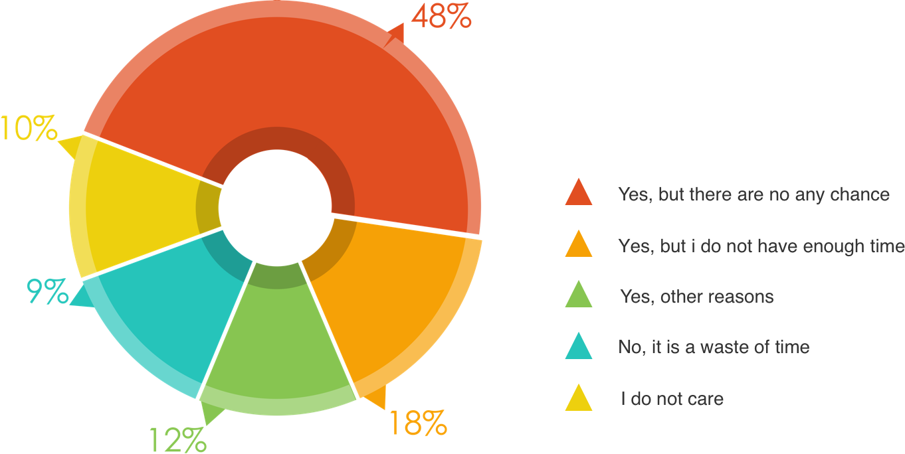
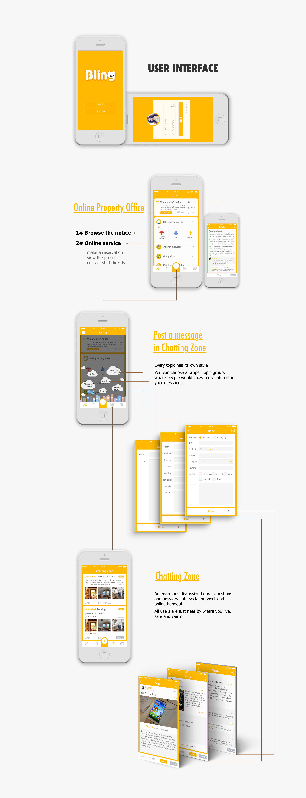

INTRODUCTION
Bling is a mobile application for its targeted users—residents in midscale and high-end residential communities in China, aiming to help them to get the information from property management timely as well as communicate with the neighbours.
The transliteration of Bling into Chinese is Bi Ling which means your neighbor and is quoted from the famous line of poem roughly translated as “A bosom friend afar brings a distant land near.”
Now, I will show you the process of designing this app beginning with some common problem in daily life.
They just can’t find a proper way to social
I started to explore the reason by conducting some questionnaire surveys and the objects were residents who are living in different level communities. The data showed that almost 48% were willing to contact with neighbors but there was no chance for them to communicate. That is, the indifference shown among people in modern society exists not out of disinterest in mutual exchange, but because of a lack of platform for this kind of communication.
Question
Whether would they like to communicate with neighborhood and explain the reason.
 They liked my design
“I wish there were such a design so that I would never worry about how to kill time in communities.”
—— Lucy, housewife, 37 years old
“Great presentaion and design, but maybe you should also interview some staffs in property because whether they are willing to use your app is not sure and their attitudes, to some extend, would decide whether residents use your app.”
—— Chaolan Tang, couse instructor